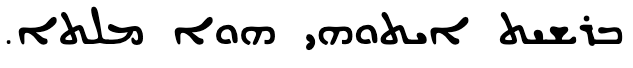
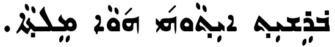
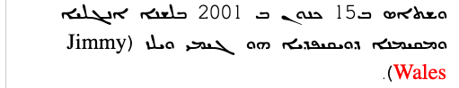
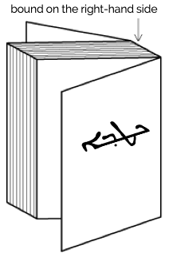

This page gathers basic information about the Syriac script and its use for the Assyrian Neo-Aramaic (Swadaya) language. It aims (generally) to provide an introduction to the orthography and typographic features, and (specifically) to advise how to write Assyrian Neo-Aramaic using Unicode.
There are many dialectal variations in pronunciation, so the phonetic information on this page reflects one dialect description for which there is reasonably good documentation. It is taken from a course in reading Assyrian by Dr. Madeleine Davis Moradkhan, who based her approach on the "Assyrian Reader for Adult Beginners" by Haido & Yousif. The character notes also contain information about correspondences in the Urmian dialect.
The Syriac script is attested as early as the year 6 AD. It was primarily used for writing the Syriac language, now extinct outside of the Syrian church. The Assyrian Neo-Aramaic, Chaldean Neo-Aramaic and Turoyo/Surayt languages are descended from Syriac, and are still written in the Syriac script. It can also be used for writing Arabic, known as Garshani writing. The script is descended from Proto-Canaanite writing. There are two main dialects of spoken Syriac; West Syriac, used by the Syrian Orthodox, Maronites, and Syrian Catholics; and East Syriac, used by the Assyrians and Chaldaeans. There are three ancient variations of the script: the classical liturgical script called Estrangelo, the Western variant, and the Eastern variant. There is also a Modern Syriac orthography, based on the Eastern variety and having the aim of bridging the differences in Aramaic dialects. A common spoken Aramaic koine used among Iraqis of Assyrian descent is based on this orthography.
Assyrian Neo-Aramaic or simply Assyrian (ܣܘܪܝܬ or ܣܘܪܬ Sūreṯ), also known as Syriac, Eastern Syriac and Neo-Syriac, is an Aramaic language within the Semitic branch of the Afro-Asiatic language family that is spoken by the Assyrian people. The various Assyrian dialects descend from Old Aramaic, the lingua franca in the later phase of the Assyrian Empire, which slowly displaced the East Semitic Akkadian language beginning around the 10th century BC They have been further heavily influenced by Classical Syriac, the Middle Aramaic dialect of Edessa, after its adoption as an official liturgical language of the Syriac churches.
Assyrian-speakers are native to Upper Mesopotamia, Iranian Azerbaijan, southeastern Anatolia and the northeastern Levant, which is a large region stretching from the plain of Urmia in northwestern Iran through to the Erbil, Kirkuk and Duhok regions in northern Iraq, together with the northern regions of Syria and to southcentral and southeastern Turkey. Instability throughout the Middle East over the past century has led to a worldwide diaspora of Assyrian speakers, with most speakers now living abroad in such places as North and South America, Australia, Europe and Russia. Speakers of Assyrian and Turoyo are ethnic Assyrians and are the descendants of the ancient inhabitants of Mesopotamia.
Syriac is, in principle, an abjad. The script relies mostly on consonant sounds to write words, although in Modern Aramaic written in Syriac vowel sounds tend to be written using diacritics, making it more like an alphabet. See the table to the right for a brief overview of features for the modern Assyrian Neo-Aramaic orthography.
The Syriac script has three main orthographic systems: maḏnḥāyā (ܡܲܕ݂ܢܚܵܝܵܐ) (eastern), ʾesṭrangēlā (ܐܣܛܪܢܓܠܐ), and serṭā (ܣܶܪܛܳܐ) (western). Assyrian Neo-Aramaic uses a version of the maḏnḥāyā orthography, derived from East Syriac texts.
For vowels, Assyrian Neo-Aramaic uses a set of dotted diacritics.
Text is usually fully pointed, making it more like an alphabet than an abjad. There are however obligatory points and optional diacritics.
Character index
Letters
Show
Consonants
ܒ␣ܓ␣ܕ␣ܗ␣ܘ␣ܙ␣ܚ␣ܛ␣ܝ␣ܟ␣ܠ␣ܡ␣ܢ␣ܣ␣ܥ␣ܦ␣ܨ␣ܩ␣ܪ␣ܫ␣ܬ
Vowels
ܐ
Other
ـ
Combining marks
Show
Vowels
ܼ␣ܿ␣ܹ␣ܸ␣ܲ␣ܵ
Other
̣␣̮␣̰␣̱␣̃␣̄␣̇␣̈␣݂␣݈␣݀␣݁␣݇␣̈␣̤␣̭
Punctuation
Show،␣܆␣܇␣؛␣.␣؟
Other
Show␣␣␣␣␣␣␣␣␣␣␣␣
Character lists show:
Phonology
These are sounds of the Assyrian Neo-Aramiac language, but take into account some dialectal variation.
Click on the sounds to reveal locations in this document where they are mentioned.
Phones in a lighter colour are non-native or allophones. Source Wikipedia.
Vowel sounds
Plain vowels
Diphthongs
Consonant sounds
labial
dental
alveolar
post-
alveolar
palatal
velar
uvular
pharyngeal
glottal
stop
pb pˤ pʰ
td tˤ tʰ
cɟ cˤ cʰ
kɡ kˤ kʰ
q
ʔ
affricate
t͡ʃd͡ʒ t͡ʃˤ t͡ʃʰ
fricative
fv
θð
sz sˤ
ʃʒ
xɣ
ħʕ
h
nasal
m
n
ŋ
approximant
ʋw
llˤ
j
trill/flap
rɾrˤ
Among most Assyrian Neo-Aramaic speakers, the pharyngeal ʕ is pronounced as ʔ or ∅, or geminates a previous consonant.
Show notes on dialectal variations, taken directly from Wikipedia:
In Iraqi Koine Assyrian and many Urmian & Northern dialects, the palatals c, ɟ and aspirate cʰ are considered the predominate realisation of k, g and aspirate kʰ.
The phoneme ħ is only used by Assyrian-speakers under larger Arabic influence. In most dialects, it is realised as x. The one exception to this is the dialect of Hértevin, which merged the two historical phonemes into ħ, thus lacking x instead.
The pharyngeal ʕ, represented by the letter `e, is a marginal phoneme that is generally upheld in formal or religious speech. Among the majority of Assyrian speakers, `e would be realised as aɪ̯, eɪ̯, ɛ, j, deleted, or even geminating the previous consonant, depending on the dialect and phonological context.
f is a phoneme heard in the Tyari, Barwari and Chaldean dialects. In most of the other Assyrian varieties, it merges with p. though f is found in loanwords for these varieties of Assyrian.
The phonemes t and d have allophonic realisations of θ and ð (respectively) in most Lower Tyari, Barwari and Chaldean dialects, which is a carryover of begadkefat from the Ancient Aramaic period.
In the Upper Tyari dialects, θ is realised as ʃ or t; in the Marga dialect, the t may at times be replaced with s.
In the Urmian dialect, w has a widespread allophone ʋ (it may vacillate to v for some speakers).
In the Jilu dialect, q is uttered as a tense k. This can also occur in other dialects.
ɡ is affricated, thus pronounced as d͡ʒ in some Urmian, Tyari and Nochiya dialects. k would be affricated to t͡ʃ in the same process.
ɣ is a marginal phoneme that occurs across all dialects. Either a result of the historic splitting of g, through loanwords, or by contact of x with a voiced consonant.
ʒ is found predominately from loanwords, but, in some dialects, also from the voicing of ʃ (e.g. (ḥašbunā)xaʒbu:na:, counting, from the root ḥ-š-b, to count) as in the Jilu dialect or the fortition of j (e.g. Urmiynāyā > UrmižnāyāUɾ:mɪ:ʒna:ja:, Urmian from mijawater)
n can be pronounced ŋ before velar consonants x and q and as m before labial consonants.
Vowels
All vowels are rendered in the Syriac script using combining characters. Assyrian Neo-Aramaic uses a series of dot diacritics. (Western Syriacuses a set of miniaturised Greek characters, and Estrangelo doesn't normally show vowels.)
Modern Aramaic written in Syriac is usually fully pointed.
The phonetics described here are based on the particular dialect mentioned at the top of this page. There are a number of different dialects which tend to write the text the same way, but pronounce it differently. For more detail, see Wikipedia.
Consonants representing vowels (matres lectionis)
Three consonants are also used to represent vowels.
ܐ␣ܝ␣ܘ
ܐ[U+0710 SYRIAC LETTER ALAPH] is usually found at the beginning or end of a word. Words that begin with a vowel sound typically start with this letter, carrying a vowel diacritic, or preceding one of the other two. At the end of a word it is usually silent.
ܼ␣ܿ
ܘ[U+0718 SYRIAC LETTER WAW] and ܝ[U+071D SYRIAC LETTER YUDH], when used as a vowel, always have a dot above or below, and those dots are only used in conjunction with those letters. The possibilities are as follows.
Other vowels are expressed through applying the diacritics to a base letter. Four more dot-based diacritics are used, in addition to the 2 just mentioned.
ܹ␣ܸ␣ܲ␣ܵ
The sound ija can be written with a single yodh consonant, and vowel diacritics both above and below it, eg. ܐܝܼܛܵܠܝܼܵܐ
Four short, single letter words are written with the word that follows them, not separate. They are:
ܒܕܘܠ
Before a word that begins with a vowel, or a consonant followed by a vowel, these four words have no vowel markings. If the next consonant is not followed by a vowel, however, they are written with a following ܲ [U+0732 SYRIAC PTHAHA DOTTED].
The following table shows how standard vowel sounds can be written, using ܒ as a base.
i
ܒܝܼ
ɪ
ܒܸ
u
ܒܘܼ
e
ܒܹܒܹܝܒܸܝ
ɛ
ܒܸ
o
ܒܘܿ
a
ܒܲ
ɑ
ܒܵ
Consonants
Basic consonants
All the letters in the Syriac block are consonants. There are 22 basic consonants, but these can be combined with one of 3 diacritics to create additional sounds. The list below shows the combinations as well as the simple consonants.
Isolated versions of 3 letters, such as may be found in counter styles, are usually presented as a doubled letter, using intial and final forms, ie. ܟܟܡܡܢܢ
The letter ܟ when handwritten alone may also look like ܟـ
Diacritics to modify consonant sounds
Assyrian Neo-Aramaic uses 7 diacritics to produce additional sounds from the basic set of Syriac consonants. Follow the links to the character notes for more details and examples.
݁[U+0741 SYRIAC QUSHSHAYA] produces the 'hard' form of a consonant. In Assyrian it is not usually used.
݂[U+0742 SYRIAC RUKKAKHA] produces the 'soft' (fricative) sound from 5 plosive consonant letters, eg. compare ܬttܬ݂t‐̣θ
When it is used with ܕdwhich already has a dot below, it is moved slightly to the side, ie. ܕ݂d‐̣
̰[U+0330 COMBINING TILDE BELOW], called maǧlīyānā, is used for 2 other letters, ܟ̰k‐̰t͡ʃܓ̰g‐̰ʒ It can also be used for the combination ܫ̰ʃ‐̰ʒ but that is commonly written using ̃ [U+0303 COMBINING TILDE] instead (still called maǧlīyānā), ie. ܫ̃ʃ‐̃ Letters with maǧlīyānā represent sounds from borrowed words.
̱ [U+0331 COMBINING MACRON BELOW] and ̄ [U+0304 COMBINING MACRON] are used with sequences of 3 consonants. The first lengthens the middle consonant, while the second adds a short epenthetic sound to aid pronunciation.
There is no equivalent to the Arabic sukun to indicate clusters of consonant sounds.
However, the short a and ɪ vowels are only used in closed syllables, so if they are followed by an intervocalic consonant, it indicates that the consonant is doubled,d eg. ܣܵܡܵܐ
See also the note about collapsing 2 yodh characters to 1 in basic_vowels.
Diacritics
Assyrian uses a relatively large number of diacritics, encoded both in the Syriac block and the Combining Diacritical Marks block.
The following diacritics modify the sound quality of the consonant they are attached to, as described in modifiers.
݁␣݂␣̃␣̰␣̮␣̄␣̱
Talqana (silent letters)
݇␣݈
݇[U+0747 SYRIAC OBLIQUE LINE ABOVE] is used in the Eastern style to indicate letters that are not pronounced. It is frequently used in the modern Aramaic koine to bridge difference in dialects. For example, ܒܬ݇ܪ is pronounced baθar in some modern dialects, harking back to the classical pronunciation, but bar in Urmi and the koine.
The letters ܐ ܥ ܗ ܝ when included for etymological reasons, are often silent, though without using the talqana.n
Syame (plurals)
̈
̈[U+0308 COMBINING DIAERESIS] is used to represent the Syriac syame (ܣܝ̈ܡܐ), which indicates plural nouns, adjectives and participles. It is needed because many plural words would otherwise look the same as the singular word, eg. ܡܠܟܐmlkʾ(malkā)king could otherwise be also read as malkēkingsInstead, the plural form can be written as ܡܠܟ̈ܐmlk̋ʾ
Although it's not strictly needed for non-regular words, it is also used for them, eg. ܒܝܬܐbytʾ(baytā)houseܒ̈ܬܐb̋tʾ(bāttē)houses
Some modern usage, however, omits this diacritic when vowel marks are present, because it is redundant.
An author can place this mark above any letter in a word, but if the word contains one or more ܪ[U+072A SYRIAC LETTER RISH] the mark is generally placed over the one which is nearest the word end, and replaces the single dot above it, eg. ܢܘܼܟ݂ܪ̈ܵܝܹܐ
Other likely locations include low rising letters, and letters near the middle or end of a word.w
The dot is also written over the 3rd person fem. suffix ܘܗ̇-wḣ-othe masc. and fem. personal pronouns, ܗ̇ܘḣwawܗ̇ܝḣyajand their corresponding demonstratives.
More recently, the Unicode Standard added a set of characters which do the same thing but also isolate the content from surrounding characters, in order to avoid spillover effects. They are [U+2067 RIGHT-TO-LEFT ISOLATE] (RLI), [U+2066 LEFT-TO-RIGHT ISOLATE] (LRI), and [U+2069 POP DIRECTIONAL ISOLATE] (PDI). The Unicode Standard recommends that these be used instead.
There is also [U+2068 FIRST STRONG ISOLATE] (FSI), used initially to set the base direction according to the first recognised strongly-directional character.
[U+061C ARABIC LETTER MARK] (ALM) is used to produce correct sequencing of numeric data. Follow the link for details.
[U+200F RIGHT-TO-LEFT MARK] (RLM) and [U+200E LEFT-TO-RIGHT MARK] (LRM) are invisible characters with strong directional properties that are also sometimes used to produce the correct ordering of text.
[U+200D ZERO WIDTH JOINER] (ZWJ) and [U+200C ZERO WIDTH NON-JOINER] (ZWNJ) are used to control the joining behaviour of cursive glyphs. They are particularly useful in educational contexts, but also have real world applications.
ZWJ permits a letter to form a cursive connection without a visible neighbour.
ZWNJ prevents two adjacent letters forming a cursive connection with each other when rendered.
Numbers
Assyrian Neo-Aramaic uses Western digits, like Hebrew.
Native numbering system
The Assyrian Reading Course describes an additive numbering system based on alphabetic letters, which is used for book publishing data, biblical references,r,51 etc., eg. ܒܪܝܼܬܵܐ ܝܗ: 1-6
Comparative counters produced by Assyrian counter styles.
The counting system uses the letters shown below. It is specified for a range between 1 and 9,999,999. However, the code points of the diacritics used here for 500–900, and 100,000–9,000,000 are not confirmed as accurate (though they should look right).
A sequence of European numbers, for example a range separated by hyphens, runs from right to left in the Syriac script (and Arabic or Thaana scripts), whereas for Persian, Hebrew, N’Ko or Adlam scripts it runs left to right.
fig_range shows some Syriac text, which is right-to-left overall, containing a numeric range that is ordered RTL, ie. it starts with 240 and ends with 250.
ܛܪܦܐ 240-250 ܩܘܼܛܢ
A numeric range in Syriac language text.
The Unicode Bidirectional Algorithm automatically produces the expected ordering when a sequence or expression follows Syriac characters. However, a sequence that appears alone on a line doesn't benefit from this, so to make the text appear correctly for Syriac you should add [U+061C ARABIC LETTER MARK] (ALM) at the start of the line (see fig_ALM). This is an invisible formatting character.
10-01-2018
10-01-2018
A numeric date alone on a line of RTL text, with ALM before it (top), and without (bottom). (Click on each line to see the code points.)
Similar special ordering is applied to numbers in equations, such as 1 + 2 = 3, for Syriac language text.
Text direction
Syriac script is written horizontally, right-to-left. Like other RTL scripts, such as Arabic and Hebrew, modern numbers and text in LTR scripts are displayed left-to-right (producing 'bidirectional' text).
Bidirectional Syriac text. Numbers are read left-to-right, and the rest of the text flows right-to-left.
The Unicode Bidirectional Algorithm automatically takes care of the ordering for all the text in fig_bidi_text, as long as the 'base direction' is set to RTL. In HTML this can be set using the dir attribute, or in plain text using formatting controls.
If the base direction is not set appropriately, the directional runs will be ordered incorrectly as shown in fig_bidi_no_base_direction.
ܐܝ ܦܝ (IP) ܕܝܠܟ ܢܬܟܬܒ ܒܬܫܥܝܬܐ ܕܦܐܬܐ.
ܐܝ ܦܝ (IP) ܕܝܠܟ ܢܬܟܬܒ ܒܬܫܥܝܬܐ ܕܦܐܬܐ.
The exact same sequence of characters with the base direction set to RTL (top), and with no base direction set on this LTR page (bottom).
This section brings together information about the following topics:
writing styles;
cursive text;
context-based shaping;
context-based positioning;
baselines, line height, etc.;
font styles;
case & other character transforms.
The orthography has no case distinction, and no special transforms are needed to convert between characters.
Writing styles
Syriac has 3 major variant writing styles. The code points for the consonant letters are the same, but the shapes of the letters and code points and shapes of vowel diacritics can vary significantly. fig_writing_styles shows the differences using typical fonts for each style.


The opening words of the Gospel of St John in (top to bottom) Estrangelo, Eastern Syriac and Western Syriac. Source w,#Alphabet_forms
Assyrian Neo-Aramaic often uses the Estrangelo style for headings.
Cursive text
Syriac is cursive, ie. letters in a word are joined up. Fonts need to produce the appropriate joining form for a code point, according to its visual context, but the code point used for a given letter doesn't change.
ܦܘܠܝܛܝܩܝܬܐ
Letters join on the right or both sides in Syriac script.
Eight letters join only to the right.
ܐ␣ܬ␣ܕ␣ܨ␣ܙ␣ܗ␣ܪ␣ܘ
All other consonants join on both sides.
Cursive joining forms
The cursive treatment produces only minor changes to glyph shapes in most cases. A small number of letters, however, exhibit noteworthy changes, especially in word final positions. fig_joining_forms and fig_right_joining_forms show all the basic shapes in Assyrian and what their joining forms look like. Significant variations are highlighted.
isolated
right-joined
dual-join
left-joined
Assyrian letters
ܒ
ـܒ
ـܒـ
ܒـ
ܒ␣ܒ݂
ܦ
ـܦ
ـܦـ
ܦـ
ܦ␣ܦ̮
ܣ
ـܣ
ـܣـ
ܣـ
ܣ
ܩ
ـܩ
ـܩـ
ܩـ
ܩ
ܫ
ـܫ
ـܫـ
ܫـ
ܫ␣ܫ̰
ܛ
ـܛ
ـܛـ
ܛـ
ܛ
ܡ
ـܡ
ـܡـ
ܡـ
ܡ
ܟ
ـܟ
ـܟـ
ܟـ
ܟ␣ܟ݂␣ܟ̰
ܚ
ـܚ
ـܚـ
ܚـ
ܚ
ܝ
ـܝ
ـܝـ
ܝـ
ܝ
ܓ
ـܓ
ـܓـ
ܓـ
ܓ␣ܔ␣ܓ݂␣ܓ̰
ܠ
ـܠ
ـܠـ
ܠـ
ܠ
ܥ
ـܥ
ـܥـ
ܥـ
ܥ
ܢ
ـܢ
ـܢـ
ܢـ
ܢ
Joining forms for shapes that join on both sides.
isolated
right-joined
Assyrian letters
ܐ
ـܐ
ܐ
ܬ
ـܬ
ܬ␣ܬ݂
ܙ
ـܙ
ܙ␣ܙ̰␣ܙ̃
ܨ
ـܨ
ܨ
ܘ
ـܘ
ܘ
ܗ
ـܗ
ܗ
ܕ
ـܕ
ܕ␣ܕ݂␣ܪ
Joining forms for shapes that join on the right only.
Alaph cursive forms
A feature of Eastern and Western Syriac styles is that an unjoined alaph within a word has a different shape according to whether it is word-final or not. For example, fig_alaph_joining shows the word ܡܠܘܿܐܵܐ where the 2 alaph characters at the end have different shapes, although both are unconnected.
A word showing different shapes for alaph.
Context-based shaping
See just above for shaping related to cursive joining.
Ligatures
Apart from the shaping required to support cursive behaviour, there are also typical ligatures, such as those shown in fig_serto_lig, some of which are optional or font-dependent.
he + yudh
ܐܠܗܝ
taw + alaph
ܬܫܟܘܚܬܐ
taw + yudh
ܟܚܬܝ
Ligatures in East Syriac style orthography.
Context-based positioning
There are sometimes clashes between diacritic marks which have to be resolved by repositioning one of the diacritics, or sometimes producing a different solution.
For example, marks are usually centred vertically over or under a base character. If, however, ݂[U+0742 SYRIAC RUKKAKHA] appears below ܕ[U+0715 SYRIAC LETTER DALATH] when the glyph for that has a dot below, the mark is moved slightly to the right, as shown here.
ܕ݂
Rukkakha moves to the right to accommodate the dot under dalath.
In this example, the RISH character carries not only a combining diaeresis, but also a vowel mark, which is moved upwards to ride above the former.
ܪ̈ܵ vs ܝܵ
Rish + diaeresis + vowel mark causes stacking diacritics.
Baselines, line height, etc.
Syriac uses the alphabetic baseline.
To include the long ascenders and descenders in Syriac, plus the (sometimes stacked) diacritics, line heights need to be slightly larger than for English text.
Font styles
tbd
Punctuation & inline features
Grapheme boundaries
Do Unicode grapheme clusters appropriately segment character units for the script? Are there special requirements when double-clicking on the text, or moving through the text with the cursor, or backspace, etc.?
Word boundaries
Syriac uses spaces between words.
There are no one-letter words. One letter conjunctions and prepositions such as ܘw are continguous with the word they precede.
Phrase & section boundaries
Modern Syriac uses ASCII punctuation and punctuation borrowed from Arabic. For separators at the sentence level and below, the following are used.
What characters are used to indicate quotations? Do quotations within quotations use different characters? What characters are used to indicate dialogue?
Emphasis
How are emphasis and highlighting achieved? If lines are drawn alongside, over or through the text, do they need to be a special distance from the text itself? Is it important to skip characters when underlining, etc? How do things change for vertically set text?
Abbreviation, ellipsis & repetition
What characters are used to indicate abbreviation, ellipsis & repetition?
[U+070F SYRIAC ABBREVIATION MARK](SAM) indicates that a sequence of characters is an abbreviation, eg. ܬܫܒܘ is an abbreviation of ܬܫܒܘܚܬܐ The line would ideally have a small circle at the start, middle and end. It normally starts to the left of the nearest tall letter to the end of the abbreviation.
Modern East Syriac texts use a punctuation mark for contractions of this sort.
Inline notes & annotations
What mechanisms, if any, are used to create inline notes and annotations? (For referent-type notes such as footnotes, see below.)
Other inline ranges
Punctuation not already mentioned, such as dashes, connectors, separators, etc.
Numbers
The Syriac abbreviation mark is used in older texts to identify letters used as numbers by drawing a line above them. See numbers for more information.
Breaking between Latin words. When a line break occurs in the middle of an embedded left-to-right sequence, the items in that sequence are rearranged visually so that the reading direction remains top-to-bottom. latin-line-breaks shows how two Latin words are apparently reordered in the flow of text to accommodate this rule.

Syriac (estrangelo) with embedded Latin text. The lower of these two images shows the result of decreasing the line width, so that text wraps between a sequence of Latin words.
In digital text the rearrangement is automatic. Only the positions of the font glyphs are changed: nothing affects the order of the characters in memory.
Text alignment & justification
Does text in a paragraph needs to have flush lines down both sides? Does the script need assistance to conform to a grid pattern? Does the script allow punctuation to hang outside the text box at the start or end of a line? Where adjustments are need to make a line flush, how is that done? Does the script shrink/stretch space between words and/or letters? Are word baselines stretched, as in Arabic? What about paragraph indents?
ـ[U+0640 ARABIC TATWEEL] can be used, as in Arabic, to lengthen the baseline inside Syriac words.
Observation: It's not clear, however, whether the use of that is for justification, or simply for word stretching.
Letter spacing
Does the script create emphasis or other effects by spacing out the words, letters or syllables in a word? (For justification related spacing, see above.).
Counters, lists, etc.
tbd
Styling initials
tbd
Page & book layout
This section is for any features that are specific to Syriac and that relate to the following topics:
general page layout & progression;
grids & tables;
notes, footnotes, etc;
forms & user interaction;
page numbering, running headers, etc.
General page layout & progression
Syriac books, magazines, etc., are bound on the right-hand side, and pages progress from right to left.

Binding configuration for Assyrian books, magazines, etc.
Columns are vertical but run right-to-left across the page.
Tables, grids, and other 2-dimensional arrangements progress from right to left across a page.
Headings
Table headings are often distinguished from the main text by using a different writing style, in addition to size differences (see fontstyle).


 [
[ [
[ [
[ [
[ [
[ [
[ [
[ [
[ [
[ [
[ [
[ [
[


 [
[